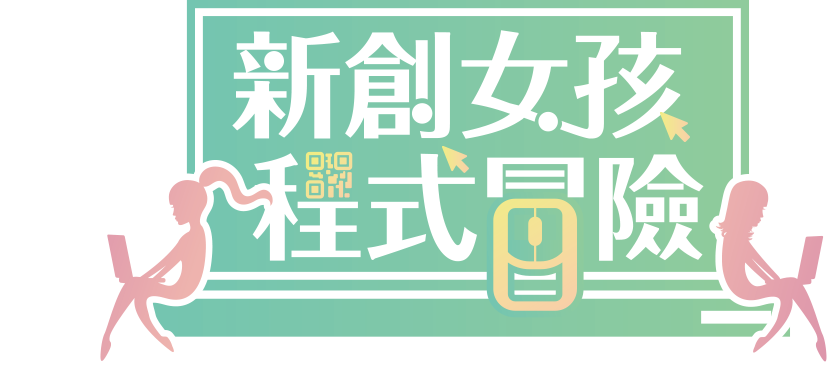
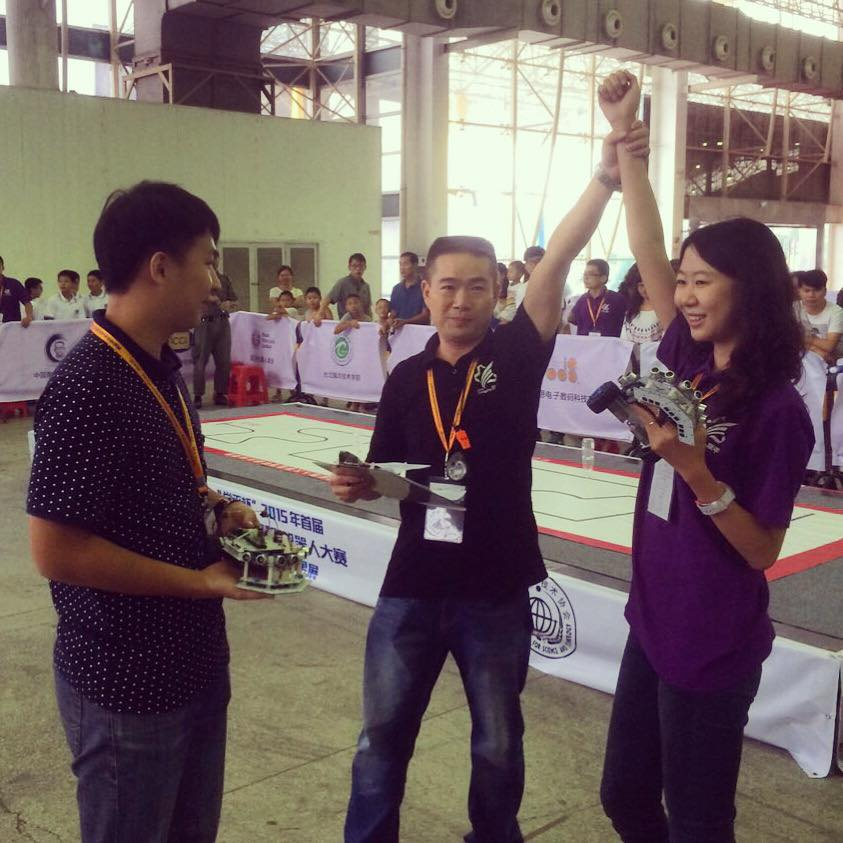

我是鄭安棋，這是我的機器人夢。
I am An Chi Cheng. This is my dream of robot.
我是鄭安棋，這是我的機器人夢。
I am An Chi Cheng. This is my dream of robot.


希望能讓孩子城市更多不同的可能，而我在做的，
就是讓更多孩子體驗STEM教育，
藉由機器人教學、maker教育，來啟發和創造更多不同的可能。
而身為女性在科學領域，我經歷了很多歧視、不平等待遇和異樣眼光，
但我相信，男生可以，女生也可以。 … More